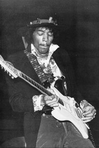

Jimi Hendrix. Быль о человеке-легенде.СВИДЕТЕЛЬСТВО о смерти Джими Хендрикса было составлено в госпитале аббатства Святой Марии в Лондоне в 13.00 18 сентября 1970 года. Из него явствует, что 27-летний Джеймс Маршалл (Джими) Хендрикс, по профессии музыкант, скончался в тот же день между 11 и 12 часами. В 2.30 ночи им была принята доза марихуаны, а в 7 утра - девять таблеток снотворного...
Однако даже сейчас, спустя четверть века со дня трагедии, обстоятельства смерти Хендрикса остаются не вполне ясными. Некоторые, в том числе предпоследняя подружка Джими Кати Этчингхем, обвиняют в случившемся Монику Даннеман - женщину, бывшую рядом с ним в последние часы его жизни. Кати считает, что Моника запоздала с вызовом "Скорой помощи", поскольку ей нужно было время, чтобы уничтожить следы приема наркотиков.
Существует еще одна версия, согласно которой смерть Хендрикса была если не самоубийством, то, во всяком случае, предопределенным событием, которое раньше или позже неизбежно произошло бы. За полмесяца до смерти в интервью, данном шведской журналистке Анне Бьорндаль, Джими Хендрикс заметил, что вряд ли доживет до 28 лет. "В тот момент, когда я почувствую, что не могу предложить ничего нового в музыке, я перестану существовать на этой планете. .. Разве что завести жену и растить ребятишек? В противном случае моя жизнь теряет всякий смысл. .. "
Джими Хендрикс родился 27 сентября 1942 года в Сиэтле. Злоупотреблявшая алкоголем мать умерла, когда Джими исполнилось 15 лет. Отец запретил сыну присутствовать на погребении, поскольку жаждал прекратить любые контакты с родственниками бывшей жены.
Семейные неурядицы однозначно отразились на школьной жизни Джими. Примерным учеником он не был, часто менял школы, не находя общего языка с педагогами. Последний раз его выперли под предлогом, что он хватал за руку белую девочку. Случались и приводы в полицию, правда, по мелочам: разбитое окно, расквашенный нос, езда на машине без водительских прав...
Любовный роман с гитарой начался у Хендрикса еще в детстве, когда за неимением оной Джими хватал метелку и отплясывал с ней, имитируя ужимки взбесившегося гитариста. Школьные учителя не раз предупреждали отца, что мальчик просто бредит инструментом, и тот в порыве благодушия приобрел для сына укулеле - гавайский щипковый инструмент. Но неугомонный Джими вскоре умудрился за пять долларов купить себе первую акустическую гитару. Позже он заимел и электроинструмент. Даже в армии, в парашютной дивизии, он не расставался со своей любимицей. Во время одного из прыжков Джими неудачно приземлился и ему удалось скостить срок службы наполовину.
Джими с головой окунулся в музыку. Он
устраивался аккомпаниатором к исполнителям всех
цветов и мастей. Не перечислить всех звезд соула,
блюза и рока разных величин, которым подыгрывал
молодой гитарист, обладавший тонким ощущением
музыки и смело идущий на эксперимент. Он был
терпелив и ждал своего часа.
И этот час пробил. В июле 1966 года его разыскал в Нью-Йорке бывший басист группы "Энималз" Чэс Чэндлер и предложил авиабилет до Лондона, утверждая, что в Америке Джими делать все равно нечего: американцы, мол, туги на ухо и ни черта не смыслят в гитарной музыке, а его талант может быть по достоинству оценен лишь в туманном Альбионе. 26 сентября того же года Джими Хендрикс впервые ступил на британскую землю, где для него началась новая жизнь.
Прежде всего он выбросил из своего имени явно лишнюю буку "эм" и стал просто Джими. Лондон пришелся ему по душе. Хендрикс был представлен великому Эрику Клэптону (это было одним из условий его перелета через океан), познакомился с басистом Ноулом Реддингом и ударником Митчем Митчелом. Они быстро нашли общий язык, и возникло трио "Джими Хендрикс экспириенс". Первый альбом "Опытны ли вы?" вспорхнул на второе место в английском хит-параде, уступив первенство лишь легендарному "Сержанту Пепперу" непревзойденных Битлз. И пошло-поехало. Чернокожий гитарист, словно по мановению волшебной палочки, одним махом превратился в мэтра рока. На парение в лучах славы ему было отпущено четыре года. ..
Джими Хендрикс баловался наркотиками. В среде рок-исполнителей это считалось обычным делом. В мае 1969 года Джими "замели" в аэропорту Торонто, обнаружив в его багаже героин. Он был отпущен под залог в 10 тысяч долларов, а позднее суд вынес оправдательный приговор, поскольку нашелся свидетель, якобы видевший, как неизвестный засовывал пакет с белым порошком в сумку, принадлежавшую Хендриксу. На суде Джими заявил, что ему доводилось пробовать разные наркотики, но чтобы героин - такого не было никогда!
А вот женщины в жизни музыканта были всегда, они
воистину вдохновляли его на музыкальное и
поэтическое творчество. Из букета муз стоит
выделить Фэй Приджеон, Линду Киф, бывшую подружку
Ричарда Кифа из "Роллинг Стоунз", Бет Дэвис,
жену гениального трубача Майлза Дэвиса. В начале
1967 года Джими чуть было не увел у Мика Джаггера
его приятельницу Марианну Фэйтфул, за что
поплатился позднее: Мик умыкнул у него Дэвон
Уилсон, с которой у Хендрикса был роман. Но
заметную роль в его жизни сыграли лишь Кати
Этчингхэм и Моника Даннеман.
Но вернемся к событиям, происшедшим осенью 1970
года. 6 сентября Джими Хендрикс нагрянул в Лондон
из Гамбурга: он остановился в отеле
"Камберленд". Первые дни были отданы
выяснениям отношений с менеджерами и дружеским
застольям. Лишь 10 сентября Джими позвонил Монике
Даннеман, а "добрался" до нее и того позднее -
15-го. Любовники чувствовали себя на подъеме, и
Джими даже накатал поэму, посвященную своей
лондонской прелестнице. Моника же в ответ
сделала 29 фотографий черного рок-идола. Ночь с 17
на 18 была занята перемещениями с места на место и
возлияниями с непрерывной сменой состава
собутыльников. Ближе к четырем часам Джими
заметил, что ему пора вздремнуть, и они с Моникой
вернулись в "Камберленд".
Утренние события получили отражение в полицейском протоколе. "Когда я увидел тело, сразу понял, что это уже труп, - свидетельствовал один из санитаров. - Дыхания не было, пульс не прослушивался. Он захлебнулся во время рвоты. Зрелище было ужасающее".
Без четверти двенадцать бездыханное тело доставили в госпиталь. К четырем часам известие о смерти Джими Хендрикса стало медленно расползаться по Лондону... "Я никогда не испытывал желания попасть на Луну. Меня всегда больше привлекали Сатурн или Венера. Они путешествуют в другом, недоступном нам измерении. И глядят на нас, как на муравьев. Не желая вмешиваться в наши дела и даже тревожить. Им с нами не по пути, у них свои цели. Нет, правда! А что, находясь в лесу, разве вы станете делать крюк в четыре мили, чтобы поглазеть на муравейник?. . " (Джими Хендрикс).
Похороны музыканта состоялись 1 октября в его родном Сиэтле.
Наталья РОМАНОВИЧ.
Перепечатано из Общей Газеты от 21.09.95.